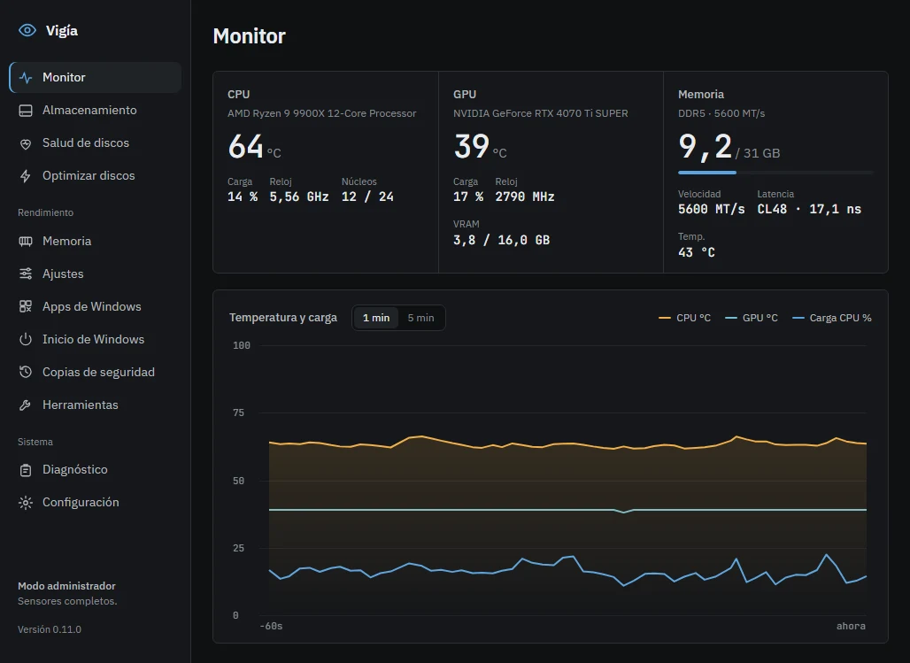

Más rendimiento para tu PC de juego. Nada que no puedas deshacer.
Vigía libera RAM, apaga lo que arranca con Windows y ajusta el sistema para jugar. Antes de cada cambio guarda una copia.
Descargar gratis v0.15.1Lo que hace
Libera la RAM sola al llegar al 60 %En una prueba devolvió 11,2 GB: del 52 % al 16 % de uso.
Apaga lo que arranca con WindowsNo borra nada: se vuelve a encender con un clic.
Resolución estiradaSi no confirmas en 15 segundos, la pantalla vuelve sola.
35 ajustes de Windows, explicados uno a unoLos de riesgo vienen apagados y marcados.
Copia antes de cada cambioSi no puede guardarla, no cambia nada.
Lo que nunca hace
Instalar drivers vulnerablesEscribir en la BIOSApagar Defender, UAC o Windows UpdateTraer activadores o programas pirataGastar CPU mientras está minimizada

Optimizar ahora Liberar memoria Resolución estirada Deshacer último cambio…
Liberar sola al 60 %
Lo que pasa dentro de tu PC, sin adornos
Temperatura y carga de la CPU y la GPU, memoria, discos y su salud. Con permisos de administrador lee todos los sensores.
Desde el icono junto al reloj tienes lo rápido: clic derecho para optimizar, liberar memoria o poner la resolución estirada sin abrir la ventana.
Cada cambio tiene vuelta atrás
- Guarda una copiaDe lo que va a tocar: registro, servicios, inicio de Windows o resolución. Si la copia falla, se detiene.
- Hace el cambioSolo lo que marcaste. Los ajustes de riesgo medio o alto no se aplican sin probarlos antes.
- Deshaces con un clicDesde Copias de seguridad o desde el icono: «Deshacer último cambio». Guarda hasta 300 copias.
Minimizada, casi no existe
Una app de optimización no debería ser lo que te quita rendimiento. Al minimizarla o cerrarla al icono, Vigía deja de leer sensores y de dibujar, y devuelve su memoria a Windows.
Medido en un Ryzen 9 9900X con la herramienta --bench que trae la app: 30 s abierta, 60 s minimizada.
| CPU (de un núcleo) | RAM | |
|---|---|---|
| Abierta | 6,7 % | 440 MB |
| Minimizada | 0,1 % | 49 MB |
Gratis, sin cuenta y sin anuncios
No pide correo ni registro, y no hay versión de pago que se guarde lo mejor. Cada ajuste se prueba en una máquina virtual con Windows limpio antes de publicarse: se aplica, se reinicia y se deshace. Si Vigía te sirvió, puedes apoyar ese trabajo desde la sección «Apoya Vigía» de la app. Donar es opcional y no desbloquea nada.
- Un recorrido de un minuto la primera vez que la abres
- Se actualiza desde la propia app, con descargas firmadas
- Si una versión nueva no te convence, vuelves a la anterior
- Español, English, Português, Français y Deutsch
Pruébala en tu PC
Descargar gratis v0.15.1El instalador todavía no tiene firma de editor, así que Windows puede mostrar «Windows protegió su PC». Pulsa «Más información» y luego «Ejecutar de todos modos». El instalador comprueba la firma de Vigía antes de instalarla.